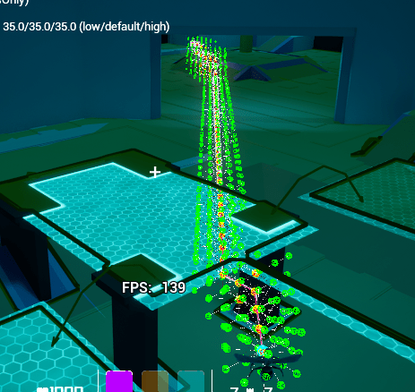
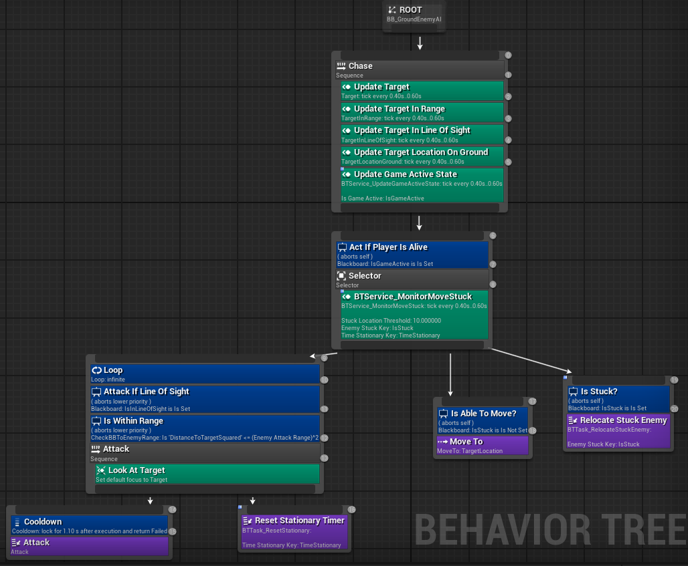
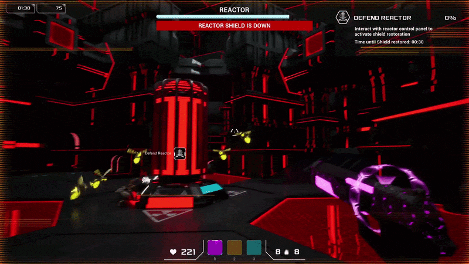

Game Overview
Escape Sequence is a sci-fi wave defense FPS built in Unreal Engine 5. Players defend base objectives (generators and reactors) from incoming waves of alien bug swarms.
I worked as the lead systems and AI programmer, building the core gameplay and enemy systems. This included porting an open-source 3D volumetric pathfinding plugin to UE5 and making it run asynchronously on background threads, setting up jump calculations for ground swarms, implementing abilities with Gameplay Ability System (GAS), and building wave spawning with Unreal World Subsystems.
Core Technical Implementation
1. Asynchronous 3D Volumetric Pathfinding in UE5
Standard 2D Recast NavMeshes could not handle flying enemies moving freely in 3D space. I ported an open-source UE4 3D volumetric navigation plugin to Unreal Engine 5, fixed engine-breaking API changes, and converted it from a synchronous system to run on background worker threads:
- Background A* Execution: Rebuilt path calculation to run as an asynchronous task on a thread pool, preventing frame drops on the Game Thread when multiple enemies request paths simultaneously.
-
Thread-Safe Search IDs: Used atomic
FPlatformAtomics::InterlockedIncrementcounters to assign unique search IDs, keeping concurrent path requests isolated across threads. - Voxel Collision Checks: Added downward raycasts from target points to correct voxel overlap issues against level geometry, ensuring path ends snap to valid open positions.
// Asynchronous 3D Volumetric Pathfinding Dispatcher
void UNavigationSubsystem3D::FindPathAsync(
const FVector& StartLocation,
const FVector& TargetLocation,
FOnPathCompletedDelegate Callback)
{
const uint32 CurrentSearchID = FPlatformAtomics::InterlockedIncrement(&GlobalSearchCounter);
Async(EAsyncExecution::ThreadPool, [this, StartLocation, TargetLocation, CurrentSearchID, Callback]()
{
FPathfindingInternalResultBundle Result = ExecutePathfindingOnThread(StartLocation, TargetLocation, CurrentSearchID);
// Dispatch back to Game Thread for delegate execution
Async(EAsyncExecution::TaskGraphMainThread, [Callback, Result]()
{
Callback.ExecuteIfBound(Result.PathPoints, Result.bSuccess);
});
});
}The volumetric grid divides open space into 3D voxels to check geometry. This lets flying enemies navigate over barricades, through doorways, and around pillars in full 3D space:


2. Target Encircling, NavMesh Projection & Ground Swarms
When all swarm enemies path directly to a player's center pivot, they
bunch up into a single tight clump. To spread them out naturally,
players and defendable objectives have a ring of radial target sockets
(EnemyTargetSpheres) around their perimeter. Enemies query
GetMovementNodes() to pick open positions around the target.
To prevent enemies from targeting nodes that clip into walls or hang off ledges, nodes are filtered in C++ with line-of-sight traces, solid geometry checks, and ground distance tests:
// Multi-stage target node validation in PlayerCharacter.cpp
TArray<USphereComponent*> APlayerCharacter::GetMovementNodes()
{
TRACE_CPUPROFILER_EVENT_SCOPE(TEXT("STAT_PC_GetMovementNodes_Total"));
TArray<TObjectPtr<USphereComponent>> TempValidMovementNodes;
TempValidMovementNodes.Reserve(EnemyTargetSpheres.Num());
float PlayerGroundDist;
bool bPlayerIsNearGround = IsPlayerConsideredNearGround(PlayerGroundDist);
for (TObjectPtr<USphereComponent> Node : EnemyTargetSpheres)
{
if (!Node) continue;
// 1. Line-of-sight check to node
if (!HasLineOfSightToNode(Node.Get())) continue;
// 2. Filter out nodes embedded inside solid level geometry
if (IsNodeInsideSolid(Node.Get())) continue;
// 3. Check ground clearance when target is on the ground
float NodeToGroundDist;
bool bNodeHasGround = GetNodeDistanceToGround(Node.Get(), NodeToGroundDist);
if (bPlayerIsNearGround && (!bNodeHasGround || NodeToGroundDist > NodeMaxAerialGroundDistance))
{
continue;
}
TempValidMovementNodes.Add(Node);
}
TArray<USphereComponent*> ResultArray;
ResultArray.Reserve(TempValidMovementNodes.Num());
for (const TObjectPtr<USphereComponent>& NodePtr : TempValidMovementNodes)
{
ResultArray.Add(NodePtr.Get());
}
return ResultArray;
}When the player jumped into the air, ground enemies using standard NavMesh lost their path and stopped moving. I added a downward projection check that maps the player's airborne 3D position down to the closest walkable NavMesh polygon so ground enemies keep pursuing:
To prevent spiders from overlapping into a single line, RVO avoidance was set to a 500cm radius on enemies and 0cm on the player. Enemies naturally push apart around the target while the player can still move through the swarm without getting body-blocked:
Spiders use Behavior Trees to manage pursuit, attack ranges, and line of
sight. A custom recovery task (BTTask_RelocateStuckEnemy)
detects if an enemy gets stuck on geometry and teleports them back to an
active spawner:


Spiders jump between vertical platforms using custom BP_NavLinks.
Jump velocities adjust based on direction: upward jumps use higher arcs
with lower gravity (-6000), while downward jumps use heavy gravity
(-11000) to clear platform edges cleanly:
Flying Wasps use Perlin noise vector offsets to create bobbing flight
movement, steering along reused spline components (BP_FlyingEnemySplinePath):
3. Gameplay Ability System (GAS) & Combat Abilities
Player weapons and enemy attack behaviors are built using Unreal's Gameplay Ability System (GAS):
- Chain Lightning (`GA_Fire_Chaining`): Fires an electric projectile that finds nearby enemies and arcs lightning between target sockets on impact.
-
Exploding Drone ("GloOrb"): Uses
GA_ExplodeAttack,GE_AOE_ExplosionDamage, andGC_ChargeUpExplosionto handle target pull, charging materials, and detonation on death. -
Distance-Scaled Damage Numbers: Damage indicators
(
BP_DamageAmount) scale their screen-space offset and spread radius based on distance to the camera to keep text readable.


4. Subsystems, Object Pooling & Wave Spawning
Spawning and wave management are coordinated globally through
UEnemySpawnManagerSubsystem (a UWorldSubsystem):
-
Trigger-Based Spawner Activation: Room trigger volumes
(
APlayerLocationDetection) send overlap events to the subsystem. As players move between rooms, only spawners in the active area remain enabled. - Objective Redirection: When a defense objective starts, the subsystem binds to objective events and redirects spawning toward the generator.
-
Type-Segregated Object Pooling: Enemies are tracked by
class type in wrapper structs (
FEnemyArrayWrapper). Spawners check the dead pool first, resetting and repositioning dead actors (ReuseDeadEnemy) to avoid runtime spawn hitches. - Trailing Enemy Relocation: If an enemy falls behind the player by more than 6500 units squared, a blackboard timer teleports them forward to an active spawner.
-
Logarithmic Wave Scaling: Wave intervals scale using the
formula
t = T0 - k * log(cycleIndex + 1)(clamped to a minimum time), creating a gradual ramp in enemy density.
// Two-tier object pooling and spawner selection in EnemySpawner.cpp
AEnemyAI* AEnemySpawner::SpawnEnemy(const TSubclassOf<AEnemyAI>& EnemyClass) const
{
if (!EnemyClass || !EnemySpawnManager) return nullptr;
FVector Location = GetActorLocation();
FRotator Rotation = GetActorRotation();
auto AliveMap = EnemySpawnManager->GetAliveEnemiesMap();
auto DeadMap = EnemySpawnManager->GetDeadEnemiesMap();
TArray<AEnemyAI*> AliveEnemies;
TArray<AEnemyAI*> DeadEnemies;
if (const FEnemyArrayWrapper* AliveWrapper = AliveMap.Find(EnemyClass))
{
AliveEnemies = AliveWrapper->Enemies;
}
if (const FEnemyArrayWrapper* DeadWrapper = DeadMap.Find(EnemyClass))
{
DeadEnemies = DeadWrapper->Enemies;
}
int32 MaxForType = EnemySpawnManager->GetMaxEnemiesByType(EnemyClass);
if (AliveEnemies.Num() < MaxForType)
{
// Reuse pooled dead actor if available
if (DeadEnemies.Num() > 0)
{
return ReuseDeadEnemy(DeadEnemies[0]);
}
// Otherwise instantiate a new actor and register with subsystem
AEnemyAI* NewEnemy = GetWorld()->SpawnActor<AEnemyAI>(EnemyClass, Location, Rotation);
if (NewEnemy)
{
EnemySpawnManager->MarkEnemyAsAlive(NewEnemy);
}
return NewEnemy;
}
return nullptr;
}5. Stencil Punchouts, Wireframe Transition & Level Loading
The match starts in a dark void. Using stencil buffer masks
(M_Font_StencilPunchout), 3D floating text and the start
console render through the darkness to look like a boot terminal:
Interacting with the console triggers a wireframe grid scan
(BP_WireframeLoad) that moves across the environment to
reveal the level. On game over, the wireframe scans in reverse back to
black.
For smooth scene transitions, a custom viewport client
(CustomGameViewportClient.cpp) handles screen fades directly
on the canvas, while BP_GameInstance keeps music playing
without cutting out during level loads.
Key Challenges Overcome
3D Volumetric Pathfinding Frame Drops:
Long-range 3D voxel searches initially took up to 81.3 ms on the main Game Thread in Unreal Insights. Porting the search logic to background threads using asynchronous task graphs reduced pathfinding overhead by over 70%.
Trailing Enemies in Large Levels:
Enemies spawned in earlier rooms fell behind when players moved forward. The spawn subsystem activates only spawners in the player's current room, while a distance check on the AI blackboard automatically teleports trailing enemies ahead to active combat areas.
Automated Platform Jumping for Spiders:
Manually setting up jump arcs across multi-level platforms took too much time. Automated the setup by generating NavLinks in RecastNavMesh and calculating jump velocities dynamically based on whether the jump was moving upward or downward.
Enemies Getting Stuck on Geometry:
Enemies occasionally became trapped behind obstacles on uneven
ground. Added a Behavior Tree recovery task (BTTask_RelocateStuckEnemy)
that checks for stationary timers and teleports stuck enemies back into
active room pools.
Enemies Clumping and Clipping into Walls:
Swarm enemies targeting a single center point clustered together and walked into walls when players stood near geometry. Attached a ring of target sockets around actors with a C++ check (line of sight, solid geometry, and ground clearance) so enemies only path to open, reachable spots.
Project Outcome
Built over the 7-week development period, the project delivered:
- An asynchronous 3D volumetric pathfinding system running on background worker threads
- Behavior Tree swarm AI with ballistic NavLink jumping and Perlin noise flight steering
- An Unreal World Subsystem managing object pooling and wave scaling